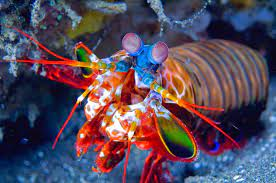

Odontodactylus scyllarus, também conhecido como Stomatopoda, é uma ordem de crustáceos marinhos da subclasse Hoplocarida, que agrupa cerca de 400 espécies, caracterizadas principalmente pela morfologia da segunda pata torácica, que é modificada em apêndice subquelado, lembrando uma pata de louva-a-deus.
| Reino | Filo | Subfilo | Classe | Subclasse | Ordem |
|---|---|---|---|---|---|
| Animalia | Arthropoda | Crustacea | Malacostraca | Hoplocarida | Stomatopoda |
Boxeador do mar!
Medindo cerca de 18 cm e habitando águas claras e rasas dos recifes, esse animal de colorido intenso é bastante apreciado no Aquarismo.
Excelente golpeador, o tamarutaca "soca" suas presas com suas garras com uma força de até 2,5 mil vezes seu peso em menos de 800 microsegundos. Este nocaute equivale a um tiro de pistola calibre 22.
Visão em 8K
Como se não bastasse, estes crustáceos apresentam a melhor visão em cores do mundo. Possuindo 08 fotorreceptores para distinção de cores (humanos possuem 03), conseguem detectar ondas ultravioleta e milhares de gradações (até 16 cores primárias).  Com um mecanismo de polarização visual complexo e visão em 360 graus, são capazes de determinar profundidade e localização de objetos em três ângulos. Este fenômeno inspira pesquisadores para o desenvolvimento e aprimoramento de recursos fotográficos e audiovisuais como os DVDs.
Com um mecanismo de polarização visual complexo e visão em 360 graus, são capazes de determinar profundidade e localização de objetos em três ângulos. Este fenômeno inspira pesquisadores para o desenvolvimento e aprimoramento de recursos fotográficos e audiovisuais como os DVDs.